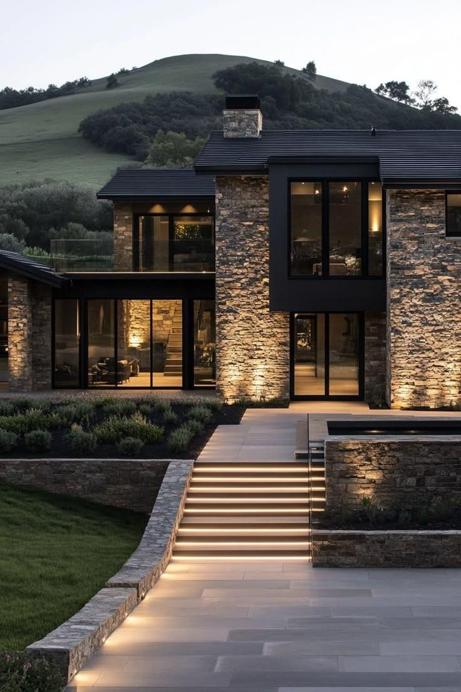

Meus projetos

Projeto casa dark
Projeto finalizado de uma casa escura nas montanhas, casa com foco em conforto e estetica
Projeto cabana de madeira moderna
Este projeto é voltado para o conforto e sustestabilidade, nele e possivel encontrar uma estetica moderna, a cabana foi feita em linhas retas, o que torna clean e minimalista, confortavel aos olhos
Minha Biblioteca: Uma Webpage Personalizada
Este projeto propôs um design moderno e minimalista, tanto por fora quanto no projeto interno. A cabana foi voltada para o filme Crepusculo, especificamente na casa dos Cullens.